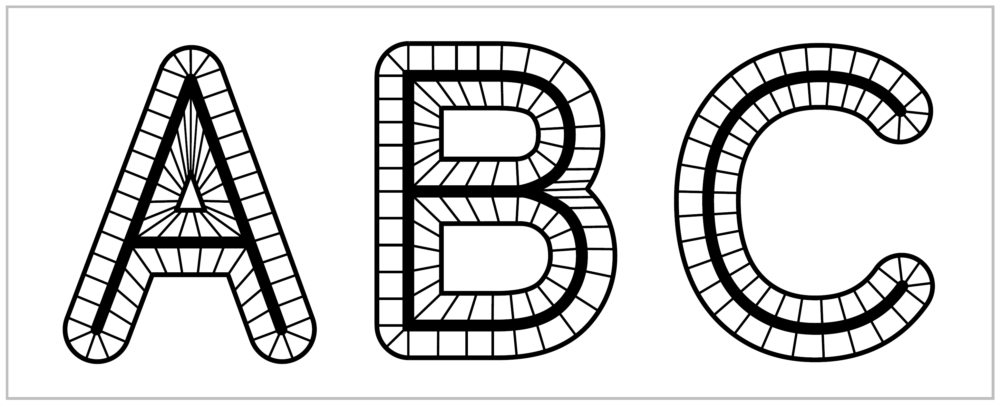
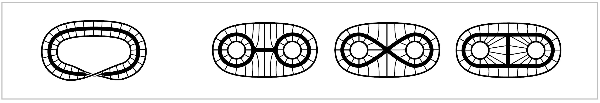

Homotopy and Homotopy Type#
One of the main ideas of algebraic topology is to consider two spaces to be equivalent if they have ‘the same shape’ in a sense that is much broader than homeomorphism. To take an everyday example, the letters of the alphabet can be written either as unions of finitely many straight and curved line segments, or in thickened forms that are compact regions in the plane bounded by one or more simple closed curves. In each case the thin letter is a subspace of the thick letter, and we can continuously shrink the thick letter to the thin one. A nice way to do this is to decompse a thick letter, call it X, into line segments connecting each point on the outer boundary of X to a unique point of the thin subletter X, as indicated in the figure. Then we can shrink X to X by sliding each point of X-X into X along the line segment that contains it. Points that are already in X do not move.
{kind=link}
We can think of this shrinking process as taking place during a time interval \(0 \leq t \leq 1\), and then it defines a family of functions \(f_t\): X \(\rightarrow\) X parametrized by \(t \in I=[0,1]\), where \(f_t(x)\) is the point to which a given point \(x \in \textbf{X}\) has moved at time \(t\). Naturally we would like \(f_t(x)\) depend continuously on both \(t\) and \(x\), and this will be true if we have each \(x \in\) X - X move along its line segment at constant speed so as to reach its image point in X at time \(t=1\), while points \(x \in\) X are stationary, as remarked earlier.
Examples of this sort lead to the following general definition. A deformation retraction of a space \(X\) onto a subspace \(a\) is a family of maps \(X\rightarrow X, \, t \in I\), such that \(f_0=\mathbb{1}\) (the identity map), \(f_1(X)=A\), and \(f_t \mid A = \mathbb{1}\) for all \(t\). The family \(f_t\) should be continuous in the sense that the associated map \(X\times I \rightarrow X, \, (x,t) \mapsto f_t(x)\), is continuous.
It is easy to produce many more examples similar to the letter examples, with the deformation retraction \(f_t\) obtained by sliding along line segments. The figure on the left below shows such a deformation retraction of a Möbius band onto its core circle.
The three figures on the right show deformation retractions in which a disk with two smaller open subdisks removed shrinks to three different subspaces.
In all these examples the structure that gives rise to the deformation retraction can be described by means of the following definition. For a mp \(f:x \rightarrow Y\), the mapping cylinder \(M_f\) is the quotient space of the disjoint union \((X \times I) \sqcup Y\) obtained by identifying each \((x,1) \in X \times I\) with \(f(x) \in Y\).
{kind=link}
In the letter examples, the space \(X\) is the outer boundary of the thick letter, \(Y\) is the thin letter, and \(f:X \rightarrow Y\) sends the outer endpoint of each line segment to its inner endpoint. A similar description applies to the other examples. Then it is a general fact that a mapping cylinder \(M_f\) deformation retracts to the subspace \(Y\) by sliding each point \((x,t)\) along the segment \(\{x\} \times I \subset M_f\) to the endpoint \(f(x) \in Y\). Continuity of this deformation retraction is evident in the specific examples above, and for a general \(f:X \rightarrow Y\) it can be verified using Proposition A.17 in the Appendix concerning the interplay between quotient spaces and product spaces.
Not all deformation retractions arise in this simple way from mapping cylinders. For example, the thick X deformation retracts to the thin X, which in turn deformation retracts to the point of intersection of its two crossbars. The net result is a deformatio retraction of X onto a point, during which certain pairs of points follow paths that merge before reaching their final destination. Later in this section we will describe a considerably more complicated example. the so-called ‘house with two rooms’.
A deformation retraction \(F_t:X \rightarrow X\) is a special case of the general notion of a homotopy, which is simply any family of maps \(f_t:X \rightarrow Y, \, t \in I\), such that the associated map \(F:X \times I \rightarrow Y\) given by \(F(x,t) = f_t(x)\) is continuous. One says that two maps \(f_0 , f_1 : X \rightarrow Y\) are homotopic if there exists a homotopy \(f_t\) connecting them, and one writes \(f_i \simeq f_1\).
In these terms, a deformation retraction of \(X\) onto a subspace \(A\) is a homotopy from the identity map of \(X\) to a retraction of \(X\) onto \(A\), a map \(r:X \rightarrow X\) such that \(r(X) = A\) and \(r \mid A = \mathbb{1}\). One could equally well regard a retraction as a map \(r:X \rightarrow X\) restricting to the identity on the subspace \(A \subset X\). From a more formal viewpoint a retraction is a mpa \(r:X\rightarrow X\) with \(r^2=r\), since this equation says exactly that \(r\) is the identity on its image. Retractions are the topological analogs of projection operators in other parts of mathematics.
Not all retractions come from deformation retractions. For example, a space \(X\) always retracts onto any point \(x_0 \in X\) via the constant map sending all of \(X\) to \(x_0\), but a space that deformation retracts onto a point must be path-connected since a deformation retraction of \(X\) to \(x_0\) gives a path joining each \(x \in X\) to \(x_0\). It is less trivial to show that there are path-connected spaces that do not deformation retract onto a point. One would expect this to be the case for the letters ‘with holes’, A, B, D, O, P, Q, R. In Chapter 1 we will develop techniques to prove this.
A homotopy \(f_t : X \rightarrow X\) that gives a deformation retraction of \(X\) onto a subspace \(A\) has the property that \(f_t \mid A = \mathbb{1}\) for all \(t\). In general, a homotopy \(f_t : X \rightarrow Y\) whose restriction to a subspace \(A \subset X\) is independent of \(t\) is called a homotopy relative to \(A\), or more concisely, a homotopy rel \(A\). Thus, a deformation retraction of \(X\) onto \(A\) is a homotopy rel \(A\) from the identity map of \(X\) to a retraction of \(X\) onto \(A\).
If a space \(f_t : X \rightarrow X\) that gives a deformation retraction of \(X\) onto a subspace \(A\) via \(f_t:X\rightarrow X\), then if
\(r:X\rightarrow A\) denotes the resulting retraction and \(i:A\rightarrow X\) the inclusion, we have \(ri=\mathbb{1}\)
and \(ir \simeq \mathbb{1}\), the latter homotopy being given by \(f_t\). Generalizing this situation, a
map \(f:X \rightarrow Y\) is called a homotopy equivalence if there is a map \(g:Y \rightarrow X\) such that
\(fg \simeq \mathbb{1}\) and \(gf \simeq \mathbb{1}\). The spaces \(X\) and \(Y\) are said to be homotopy equivalent or to
have the same homotopy type. The notation is \(X \simeq Y\). It is an easy easy exercise to check
that this is an equivalence relation, in contrast with the nonsymmetric notion of deformation
retraction . For example, the three graphs  are all homotopy
equivalent since they are deformation retracts of the same space, as we saw earlier,
but none of the three is a deformation retract of any other.
are all homotopy
equivalent since they are deformation retracts of the same space, as we saw earlier,
but none of the three is a deformation retract of any other.
It is true in general that two spaces \(X\) and \(Y\) are homotopy equivalent if and only if there exists a third space \(Z\) containing both \(X\) and \(Y\) as deformation retracts. For the less trivial implication one can in fact take \(Z\) to be the mapping cylinder \(M_f\) of any homotopy equivalence \(f:X\rightarrow Y\). We observed previously that \(M_f\) deformation retracts to \(Y\), so what needs to be proved is that:math:M_f also deformation retracts to its other end \(X\) if \(f\) is a homotopy equivalence. This is shown in Corollary 0.21.
A space having the homotopy type of a point is called contractible. This amounts to requiring that the identity map of the space be nullhomotopic, that is, homotopic to constant map. In general, this is slightly weaker than saying the space deformation retracts to a point; see the exercises at the end of the chapter for an example distinguishing these two notions.
Let us describe now an example of a 2-dimensional subspace of \(\mathbb{R}^3\), known as the house with two rooms, which is contractible but not in any obvious way.
To build this space, start with a box divided into two chambers by a horizontal rectangle, where by a ‘rectangle’ we mean not just the four edges of a rectangle but also its interior. Access to the two chambers from outside the box is provided by two vertical tunnels. The upper tunnel is made by punching out a square from the top of the box and another square directly below it from the middle horizontal rectangle, then inserting four vertical rectangles, the walls of the tunnel. This tunnel allows entry to the lower chamber from outside the box. The lower tunnel is formed in similar fashion, providing entry to the upper chamber. Finally, two vertical rectangles are inserted to form ‘support walls’ for the two tunnels. The resulting space \(X\) thus consists of three horizontal pieces homeomorphic to annuli plus all the vertical rectangles that form the walls of the two chambers.
To see that \(X\) is contractible, consider a closed \(\epsilon\)-neighborhood \(N(X)\) of \(X\). This clearly deformation retracts onto \(X\) if \(\epsilon\) is sufficiently small. In fact, \(N(X)\) is the mapping cylinder of a map from the boundary surface of \(N(X)\) to \(X\). Less obvious is the fact that \(N(X)\) is homeomorphic to \(D^3\),the unit ball in \(\mathbb{R}^3\). To see this, imagine forming \(N(X)\) from a ball of clay by pushing a finger into the ball to create the upper tunnel, then gradually hollowing out the lower chamber, and similarly pushing a finger in to create the lower tunnel and hollowing out the upper chamber. Mathematically, this process gives a family of embeddings \(h_t:D^3 \rightarrow \mathbb{R}^3\) starting with the usual inclusion \(D^3 \hookrightarrow \mathbb{R}^3\) and ending with a homeomorphism onto \(N(X)\).
Thus we have \(X \simeq N(X) = D^3 \simeq \, point\), so \(X\) is contractible since homotopy equivalence is an equivalence relation. In fact, \(X\) deformation retracts to a point. For if \(f_t\) is a deformation retraction of the ball \(N(X)\) to a point \(x_0 \in X\) and if \(r:N(X) \rightarrow X\) is a retraction, for example the end result of a deformation retraction of \(N(X)\) to \(X\), then the restriction of the composition \(rf_t\) to \(X\) is a deformation retraction of \(X\) to \(x_0\). However, it is quite a challenging exercise to see exactly what this deformation retraction look like.